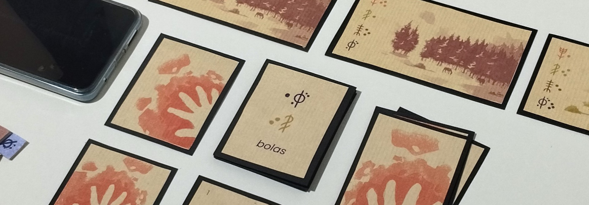
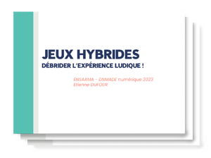
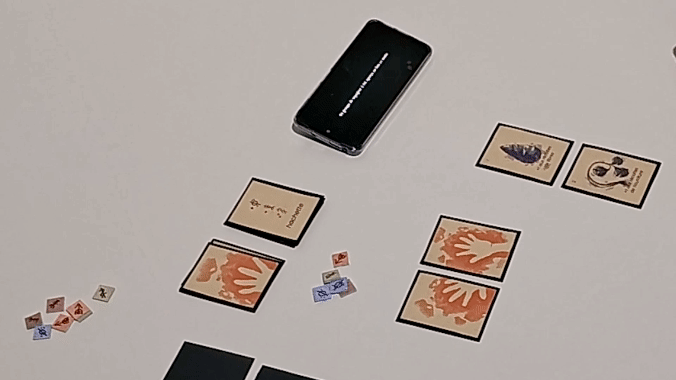
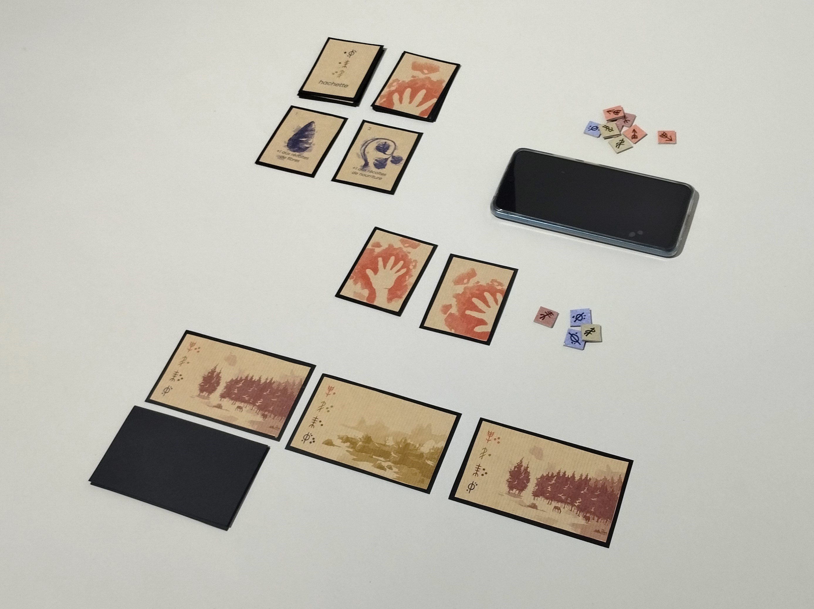
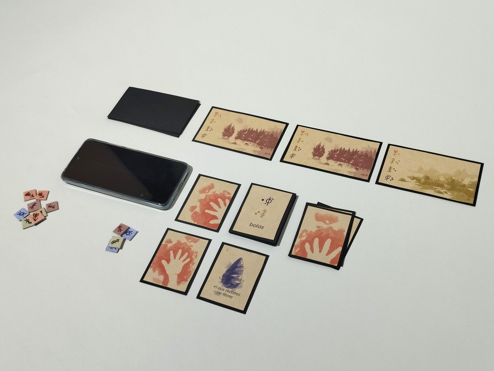
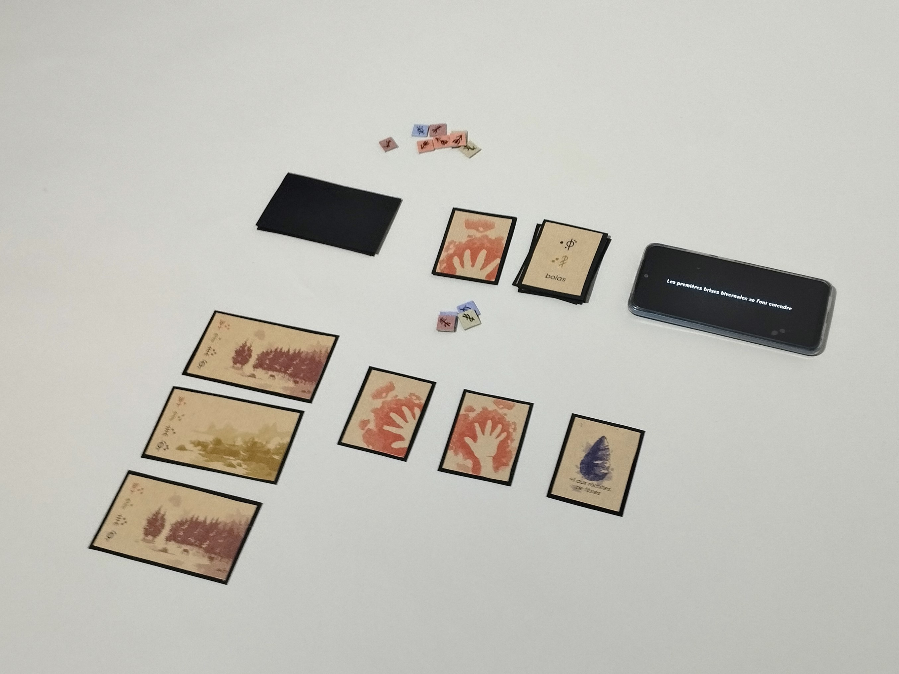
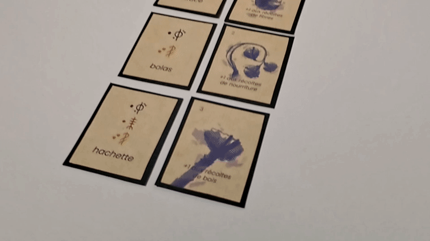

Nomades
Nomades est un jeu hybride réalisé dans le cadre de mon mémoire de DNMADE, qui traite de l’association du numérique au tangible dans le contexte des expériences ludiques.
Dans ce jeu, vous incarnez une tribu nomade du Paléolithique. Votre objectif est d’explorer les environnements qui vous entourent, de développer votre groupe en fabriquant des objets et de survivre aux différents défis rencontrés.

Associer le numérique au tangible
J’ai développé une application qui s’intègre au gameplay en faisant office de guide narratif. Les différentes étapes de jeu et les défis survenant en cours de partie sont présentés au joueur sur son support mobile.
Ayant pour volonté première d’ancrer mon expérience dans le tangible, j’ai restreint la présence de l’application en limitant les interactions du joueur à une simple pression sur l’écran pour avancer à l’étape suivante.
Le numérique fait également office d’enveloppe immersive en ajoutant de la musique et des bruitages en rapport avec les événements du jeu.

La liberté du joueur
Afin de renforcer le sentiment de liberté provoqué par le jeu et d’encourager le joueur à s’approprier le matériel, j’ai choisi de ne pas définir de placement prédéfini pour les différentes cartes.
Le joueur est donc libre d’organiser son matériel de jeu comme il le souhaite.



L’esthétique
Le matériel tangible étant central dans mon expérience, j’ai conçu une esthétique mettant en avant des textures naturelles.
Pour limiter la complexité, les quatre ressources du jeu sont chacune associées à une couleur : la pierre en bleu, les fibres en jaune, le bois en marron et la nourriture en orange.
Les graphismes des cartes sont réalisés en dessin numérique à partir d’un principe de superposition de calques texturés. Le matériel a ensuite été imprimé sur du papier kraft.
